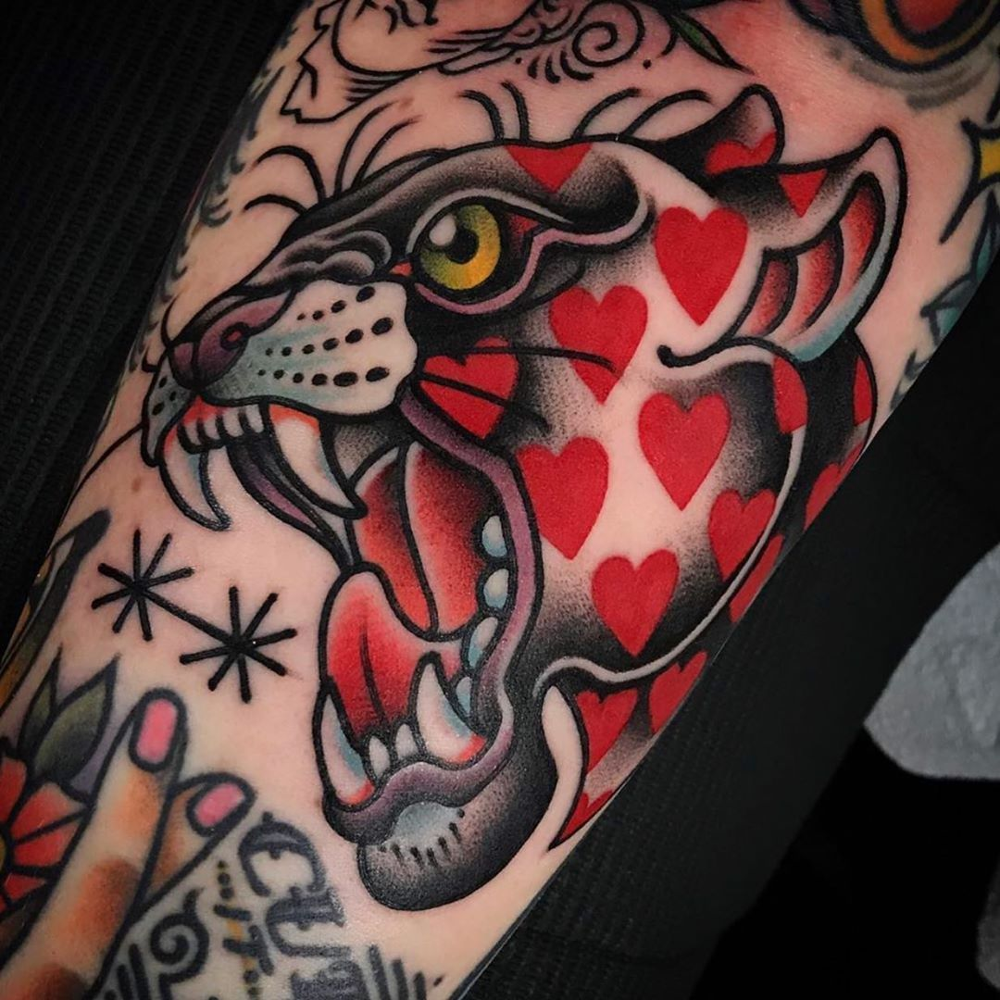

Old school tattoos, also known as American, Traditional, and/or Western tattoos are distinguished by their crisp
black outlines, vibrant colors, and minimal shading. Traditional tattooing is based on these principles: making
it one of the most bold and recognizable tattoo styles available. As subject matters, women, daggers, roses,
wolves, skulls, and ships are extremely common. The boldness and complexity of traditional tattoos are a match
made in heaven. They symbolize a distinct era in mankind's relationship with tattooing while also paying homage
to the tattoos from which they descended.
Old School tattoos are the aesthetic manifestation of travel and liberation. They marked a rejection of the
American dream and a life lived outside the bounds of mainstream society when they first appeared on people in
American culture in the 1930s. In today's world, they still have the same meaning. Norman Collins or Sailor
Jerry, a tattoo legend, created this classic style in Hawaii during World War II, when the island was a
crossroads for millions of American men. With the resurgence of traditional tattoos, these works inspire their
wearers with the same ideas that gave rise to them in the first place: a rejection of popular culture and a
desire to live a different life.